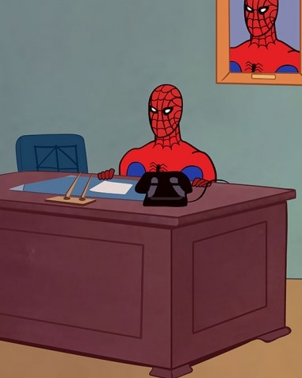

|  |
ПриветЧеловек-паук (англ. Spider-Man, бояр. Мизгирь-муж) — хрестоматийный супергерой американских комиксов, самый известный и прибыльный продукт жизнедеятельности издательства Marvel. По популярности и количеству производимого поп-культурного контента его конкурентами являются, пожалуй, только Супермен и Бэтмен. Популярная серия форчановских макросов. Берёт начало от дешёвого мультсериала про Паука 67-го года высера, вырвиглазно нарисованного и убого сочинённого. В 2009 году мультфильм пережил второе рождение, после того как его серии были безжалостно размещены на марвеловском официальном сайте. Анонимусу, однако, этот низкосортный трэш пришёлся по нраву, и макросы, налепленные из кадров этого сериала, заразили сначала /co/, а затем и другие борды Форчана. Время от времени вирус «Паук 60-х» приводит к безвременной гибели целых тредов этого имиджборда. Свяжись с человеком пауком Spider_man_turbo@marver.com |